Kotobus Customer Center050-3537-567810:00 - 18:00 every day
Safety Initiatives
Kotobus is the first company in Shikoku acquired the international standard “ISO39001 (Road Traffic Safety)” certification!
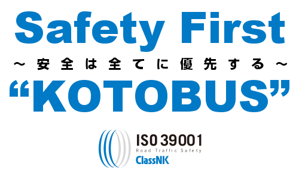
Your safety is our priority
Operation Director Mr. Nishikawa
Compliance depatment Mr. Miyamoto
Tokushima Office Manager Mr. Okamoto
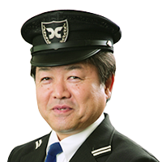Trainer Mr. Okamoto
ISO 39001
ISO 39001:2012 specifies requirements for a road traffic safety (RTS) management system to enable an organization that interacts with the road traffic system to reduce death and serious injuries related to road traffic crashes which it can influence. More than 1.3 million people have died and more than 50 million people are injured in road traffic accidents worldwide annually. To prevent traffics accidents, ISO39001 was issued in October 2012 as the world most trusted international regulation on road traffic safety.
Clean and safe buses
Operation management system
Kotobus is equipped with a 24-hour monitoring system.
In addition to management during operation, we also provide many devices to ensure physical conditions and safety guidance for each driver.
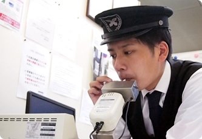
Alcohol check
Before drivers start their work, we will check their complexion, breath smell, and voice. In addition, an alcohol detector is used.
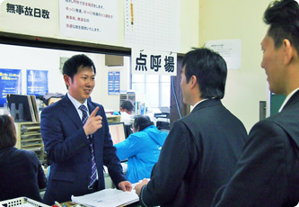
Roll call
The operation manager will check the bus driver's attendance, their physical condition, operation route, driving license, and perform the alcohol check.
Vehicle inspection
Bus drivers will conduct appropriate inspections to ensure a safe trip before departure and in the service area during the trip. After the trip, they will check if there are any abnormalities.
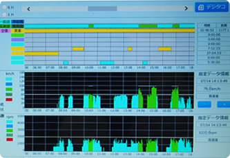
Digital tachograph
The digital tachograph will automatically record the bus operating speed and time. The result can be used for guidance on safe operation.
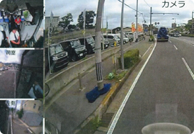
Driver recorder
We will record videos when a bus is being operated.
The bus driver will be aware of safe driving, therefore improve safe driving.
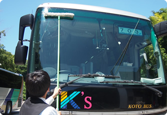
Cleaning
The bus driver will clean the bus, both inside and outside after our trips to provide a comfortable and clean bus for the customer on the next day.
Improve bus drivers' skills
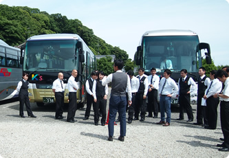
Safety guidance
We regularly provide training programs in safety guidance.
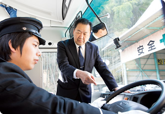
Employee training
We regularly provide training programs in improving the driving skills.
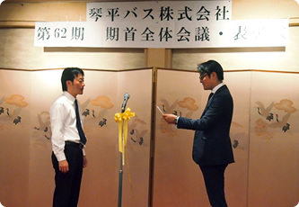
The accident-free driving award and excellent driver award system
The accident-free driving award will be awarded to drivers who worked hard to prevent accidents. In addition, we award excellent drivers too.
Improve service quality
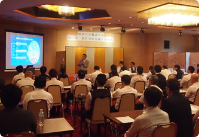
Improve service quality
In order to improve service quality, our project team cooperated with external professionals to prepare manuals, conduct on-job training, and workshops.
Ensure safety
Kotobus is using the latest vehicles with high safety performance.
Kotobus is using the latest vehicles with high safety performance. All of our regular buses are "New Selega & Gala" bus. Furthermore, the Tokyo, Fukuoka and Nagoya line vehicles are equipped with the latest safety devices such as PCS (Pre-Collision System), vehicle wander alarm, and VSC (vehicle stability control).
*6/11 buses are equipped with the latest safety equipment such as PCS.
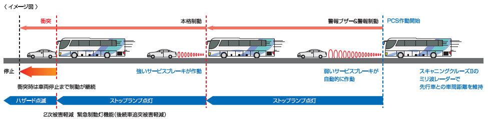
Unstable driving alarm - Wander alarm
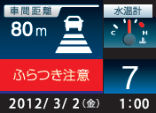
When a wobbling situation occurs, the wander alarm will go off.
If the wobbling situation does not end, the PCS will be activated automatically.
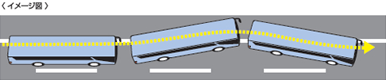
Prevent dangers on slippery roads
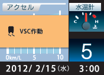
VSC=Vehicle Stability Control
Lane departure warning (Warn the driver if the vehicle is drifting out of its travel lane) will go off, engine output limitation and brake operation support the driver's operation accurately.
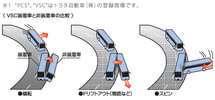
New safety eye
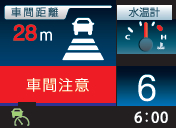
Warning when the distance between your vehicle and the preceding vehicle is less than the safe distance: the notification will be displayed on the multi-indication display and buzzer will be activated.
Emergency braking light function
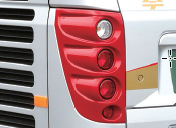
The stop-light flashes when the brakes are suddenly applied by the foot brake or PCS. It will alert the vehicles behind to prevent the secondary impact.
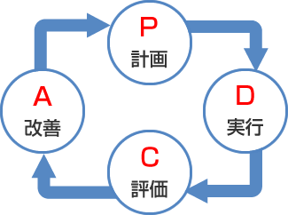
PDCA cycle
Your safety is our priority". We are applying the PDCA cycle (Plan, Do, Check, Action) to avoid foreseeable incidents and minimize the damages caused by an accident.
FAQs on improving safety and quality of Kotobus
What do you prepare before your bus trip?
The operation manager will check the bus driver roll call, their physical condition, operation route, driving license, and perform the alcohol check by using an alcohol checking device.
How is your vehicle inspection?
Bus driver will conduct appropriate inspections to ensure safe operation before departure and during a break in a service area during the trip.
What should I do if I encounter some problems while taking your bus?
Please contact our emergency contact (available 24 hours a day). In addition, please send us your requirements through the customer survey.